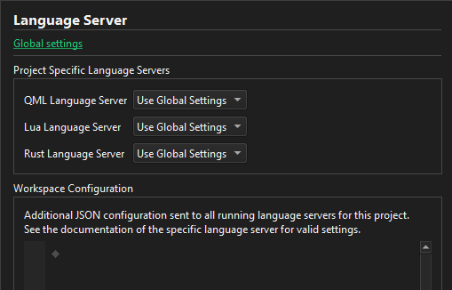

Configure language servers for projects
To configure language servers for the current project, go to Projects > Project Settings > Language Server.

To add language servers and change their preferences, select Global settings.
Turn on and off language servers
To turn on and off language servers, select Enabled or Disabled in Project Specific Language Servers.
Configure language server workspace
The language client sends the contents of the Workspace Configuration field as a JSON file to all language servers that have files open that belong to the project. The contents of the JSON file must be valid JSON. The available settings depend on the language server.
In Workspace Configuration, specify language server settings using valid JSON format.
See also How To: Manage Language Servers, Language Servers, and Configuring Projects.